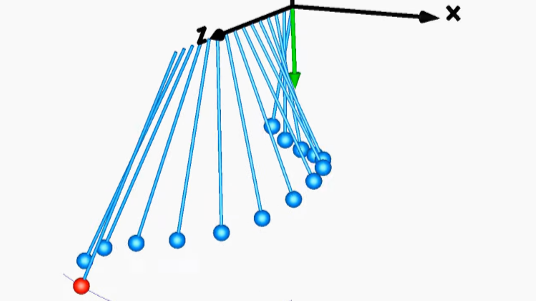
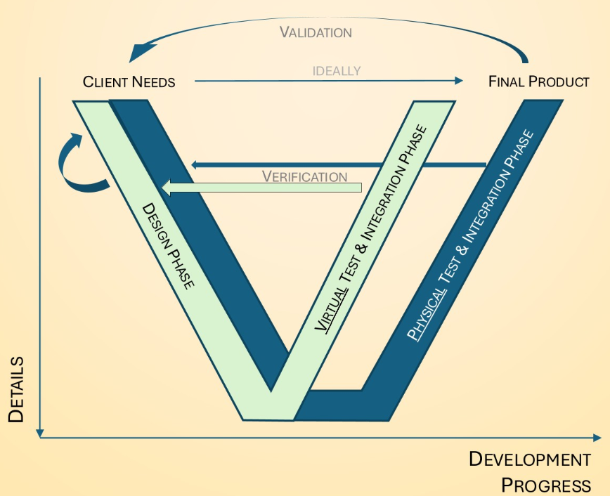
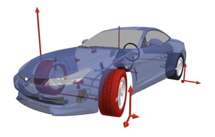
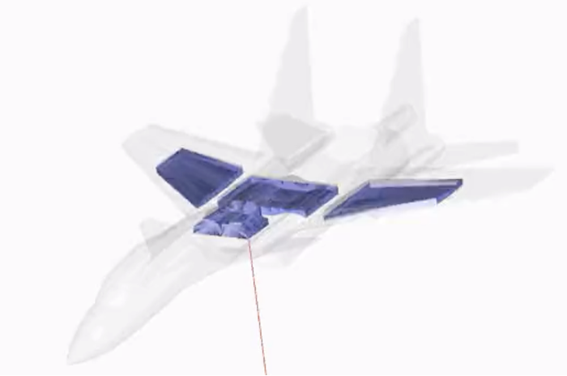

Modelica 101

I hope you’ve got your preferred drink in hand ☕️🫖💧
Last week I committed to teach Modelica and FMI and barely explained what these are. I also said I would like to do it with short, gradual, understandable and regular notes.
So bear with me on this one. I need to cover the basics: what Modelica is (not), when (not) to use it, what software support Modelica and what are good resources to learn faster than this newsletter… (because some of you might have more time than patience and you can fast-track your learning.)
And I also selected some nice examples to whet your appetite for what’s possible to do with Modelica…
… all in under 10 minutes, I promise!
And if you are an expert, jump to the last section to see how you can contribute. 💪
So, what is Modelica?
Modelica is an open, object-oriented, acausal and equation-based language used for modeling complex physical systems. Think of it as a super-powered toolbox for simulating everything from electric vehicles and heating systems to industrial robots and even coffee machines (yes, really! see the image in my post).
Open: the language specification is accessible to all (html or pdf) and, if you are a beginner, don’t read it! It will appear much more complex than what it is… You can join the Modelica Association as a person or a company to contribute to the evolution of its standards. Anyone is allowed to develop a tool that relies on these open standards!
Object-oriented: taking shortcuts here, this is basically what allows you to combine models (or model parts) in certain manner so that you can build up models from other models. This is very simplified and, for now, that’s enough. We will dig deeper into this in the future!
Acausal and equation-based: Unlike many programming languages, Modelica isn’t about telling the computer step-by-step how to solve a problem. Instead, you describe the what—the equations, the relationships, the physical laws—and Modelica works out the how. For example, if you want to model a car’s suspension, you’ll write down the equations describing the springs and dampers, connect the components together and the Modelica compiler will figure out how turn the equations around so that you can see how the system behaves over time.
You want to know more about acausality and equation-based modeling? In this post, I clarified the differences between causal/acausal and block diagram/component-based modeling. Read this second post to see how acausality is magic and can even allow you to size components!
Duality code / diagram
Modelica is a textual language. Behind all is code. However, it also allows for having visuals (icons) to the models and the syntax allows for building models graphically.
The two images below are exactly the same model. On the left you see the diagram view of the model, and on the right its textual representation. At the end of the day, the text/code is what is saved and the diagram is regenerated from it.

Oh, and by the way, this model models the charging of a battery with a constant current constant voltage charger. (Yes, I know… “model models” 🙄 but I could not come up with a better sentence right now.) And this model belongs to the Modelica Standard Library (you’ll know very soon how to find it when I write: Modelica.Electrical.Batteries.Examples.CCCVcharging). Note that several components appear on the screen (e.g. a ground, a battery and a charger) and are connected together via connection lines. In a few weeks from now, you’ll be able to “read” that from the text too - actually you could already even if I have not explained it yet. And we will also see what each connection line means. It is going to be fun, you’ll see!
For now, we need to move on. Your break is already well started. I’ll speed up, no worries…
You don’t necessarily have to code yourself
There is a Modelica Standard Library that includes the base model for most physical domain and many other open-source or vendor libraries for industry applications. Often, you can just make models by dragging and dropping models on the canvas and connecting / parametrizing your system. Go here for a list of all registered libraries.
What Modelica is NOT
Modelica is not a tool (I am repeating myself here). There are software that allow you to work with Modelica, like Dassault Systèmes Dymola, Modelon Impact, OpenModelica, orthogonal ODE+, Wolfram MathCore System Modeler, etc. Have a look at the full list of tools.
It’s not a “black box” tool. You can look inside, see the equations, and understand the what the model does. Transparency is the name of the game.
It’s not tied to a specific physical domain or industry. You’ll find people modeling electrical, hydraulics, mechanical… systems in automotive, energy, aerospace, buildings… industries.
And if you have followed so far, Modelica is not a programming language for apps or websites. You won’t write Modelica to build to-do lists or social networks… just saying!
When to use Modelica
Key to an MbSE development
I have a Model-based System Engineering (MbSE) background, so it won’t be the last time that I refer to the (double-)Vee. If you don’t know these, I explained the Vee and double-Vee (and RFLP) in the past. Feel free to check these quick resources.
For the purpose of this article, I’ll just point a the fact that along a product development, the system is decomposed into subsystems and with this, the level of details of the system description (and model!) are increasing:

Why do I diverge towards MbSE? Because Modelica is very useful for the top 2/3 of the double-Vee. Only when the level of details becomes too high, you start using a different type of modeling (more related to detailed geometry) like Finite Element or Computational Fluid Dynamics.
Well suited for Modelica:
- You need to model systems with multiple interacting physical domains
- You want reusable, modular models—so you can build a library of components and mix and match as needed.
- Transparency and open standards matter to you.
- You enjoy seeing the actual equations under the hood! And even maybe create your own model variants.
- You want to observe dynamic behavior, solve steady-state (sizing) problem or even do optimum control!
Rather use another technology:
- Your problem is purely data-driven (think: statistics, machine learning, or business analytics).
- You’re looking for a tool for rapid prototyping of apps or user interfaces.
- You need ultra-detailed models which are based on the detailed geometry.
Some great examples of what can be done
I love this Flow balancing example, not only because I did it 😅, but because it illustrates very well the capabilities of the acausality of Modelica language: you can use simulation to size parts of your system! In this case the orifices in each branch of the circuit are computed to achieve the right cooling. (Sorry for the crowded image!)

Capture vehicle forces when driving. (Shout out to Johan Andreasson, John Griffin, Sidharth Malik, Peter Sundström and Ivar Torstensson - when it comes to Modelon vehicle dynamics, one of them has been behind for sure 😅)

You can model bearings, Wolfram MathCore has a library for this!

Another interesting use case is the modeling of Fuel Systems in aircraft:

And there is more. HumanComfort from XRG Simulation GmbH models the dynamic, thermal behaviour of buildings, vehicles, ship and aircraft cabins.

TLK Energy has a strong focus on thermodynamics modeling with their TIL Suite and model a lot of use cases - here a Heat Pump model:

This is only a handful selection of examples of what can be done in Modelica. There are many more examples and I hope to see many more examples in the comments.
📢 Call for experts!
Share your preferred example of a Modelica model in comment, ideally with images. Show the world what it possible to do 😎
The END for today
Enough for today. Next time, we will create our very first Modelica model together. Simple but we’ll learn a lot! And FMI? It’s coming!
Like 👍 , comment ✍️ to spread the word!
Break is over, go back to what you were doing.
Clément
Next ->
Bonus: resources for fast learners
- The multibody pendulum animation from Luigi Vanfretti.
- Michael Tiller explaining the role of Dymola in MBSE in this video. As Dymola is a tool that leverages Modelica, it can all be generalized to Modelica itself. Thanks Dassault Systèmes for this great video!
- Michael Tiller’s (again) book Modelica by Examples.
- Maybe your local university library has my book and you could borrow it for free. (If not, don’t buy it!)
- Many resources listed by the Modelica Association.
- OpenModelica has resources to learn Modelica together with their software.
- More books.
© 2025 Clément Coïc — Licensed under creative commons 4.0. Non-commercial use only.